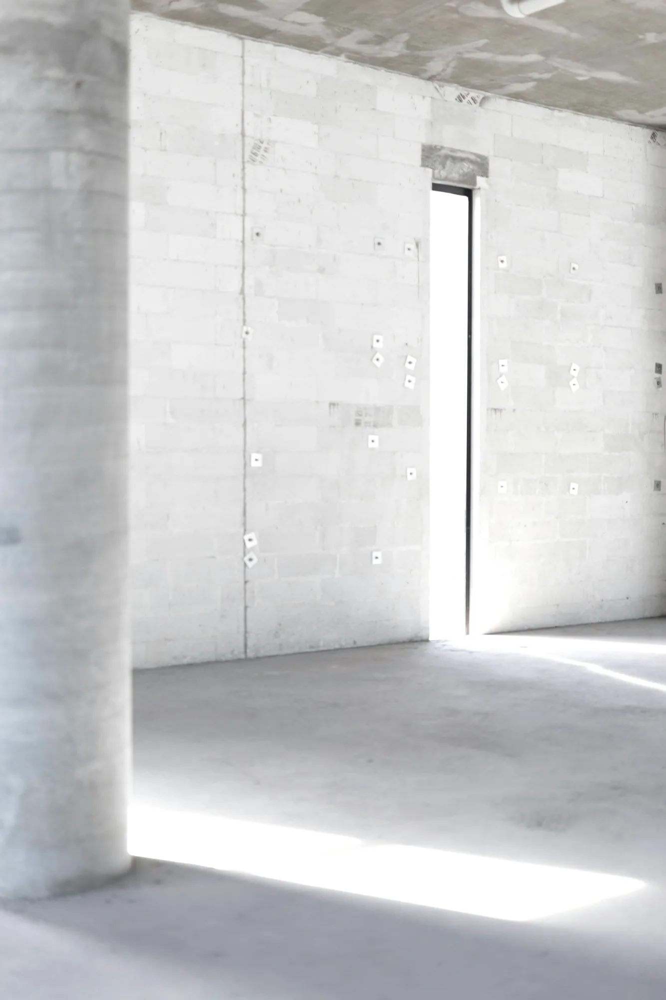
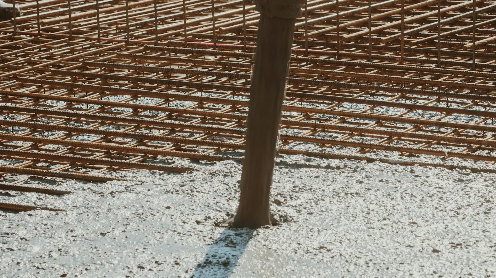
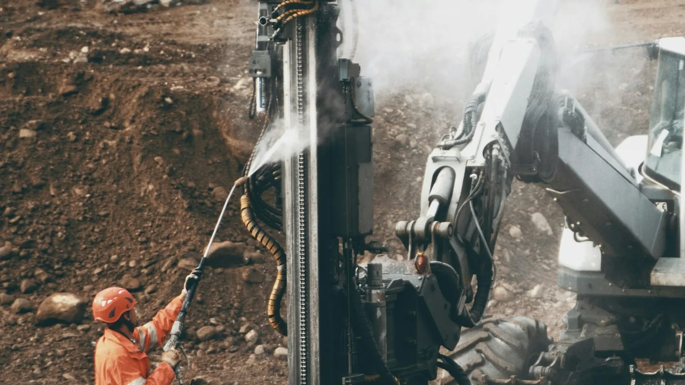
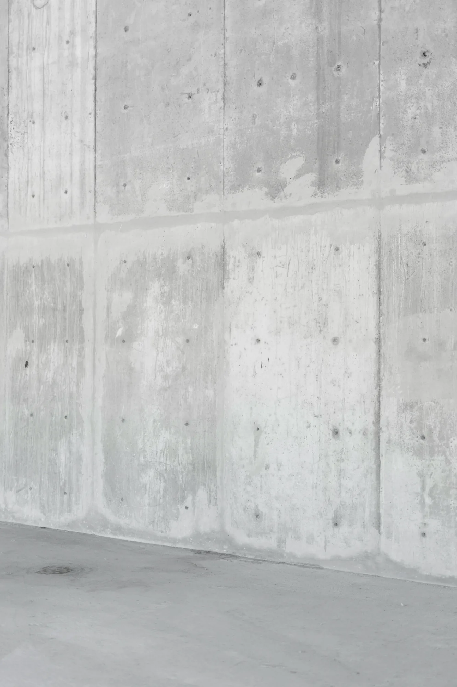
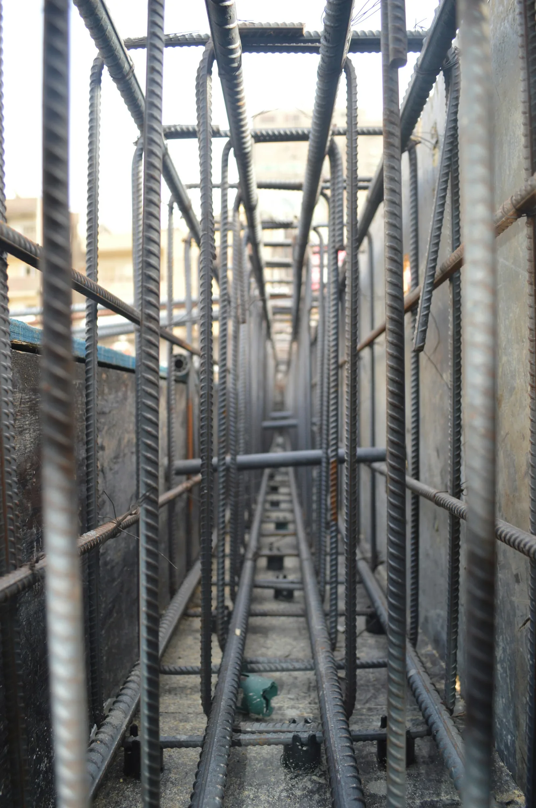
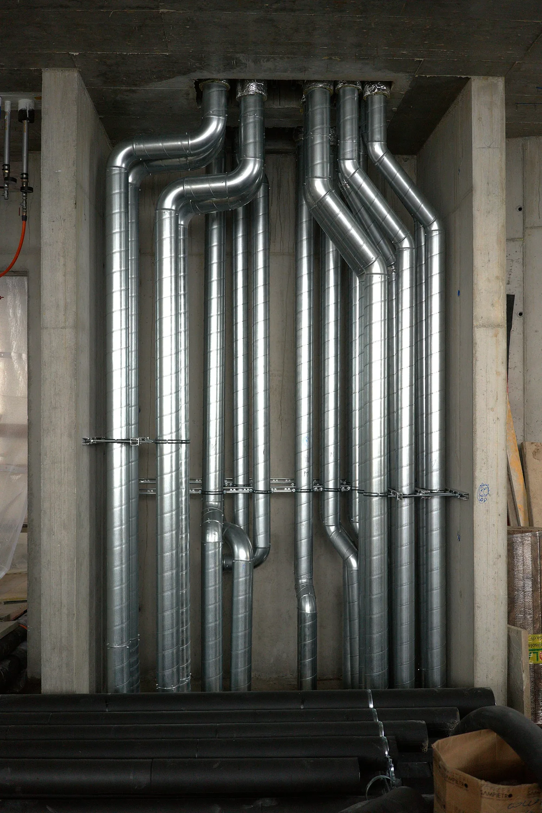

Performance is built before it is seen.
The structural safety, serviceability and durability of a building are established through an integrated engineering process that begins with project-specific ground investigation and geotechnical assessment and continues through seismic analysis, structural design, reinforcement detailing, concrete specification and execution, waterproofing, building-envelope engineering and multidisciplinary building-services coordination.
Nova approaches construction as the physical execution of a defined engineering system. Structural assumptions, material specifications, reinforcement detailing, execution tolerances, construction sequencing and interface requirements are treated as interdependent parameters whose consistency must be maintained from analysis and technical documentation through site execution, verification and completion.
For reinforced-concrete construction, performance depends not only on specified concrete strength and reinforcement quantity, but also on reinforcement configuration, anchorage and splice detailing, transverse reinforcement and confinement, concrete placement and consolidation, nominal concrete cover, execution tolerances, curing conditions and the treatment of construction joints. These parameters influence force transfer, deformation capacity, crack control, durability, serviceability and the structural response assumed in design.
The same engineering discipline extends beyond the primary structural system. Waterproofing continuity, thermal and air-control layers, façade and glazing interfaces, penetrations, drainage, acoustic assemblies and building services are coordinated as parts of a single building system. Particular attention is given to junctions and interfaces, where discontinuities in design, material compatibility or execution can govern long-term performance.
For projects developed in Istanbul, structural and construction decisions are evaluated within the Turkish regulatory and technical framework applicable to the project and permit date, including TBDY 2018, the Türkiye Deprem Tehlike Haritası, project-specific geotechnical requirements and the applicable standards governing loads, reinforced-concrete design, materials and execution. The objective is not merely compliance with isolated specifications, but continuity of engineering intent from analysis and detailing through construction, verification and long-term use.
Structural behaviour is defined by the system as a whole and developed as a continuous load-resisting system rather than as a collection of independent elements. Gravity actions, seismic effects, stiffness distribution, load-transfer mechanisms and the interaction between foundations, vertical structural elements and floor systems are evaluated within a three-dimensional analytical model consistent with the adopted structural system. The structural configuration is determined on a project-specific basis from ground and foundation conditions, building geometry, mass and stiffness distribution, architectural organisation, load demands and the seismic design requirements governing the project.
No structural system is selected by template. Ground and foundation conditions, building height and geometry, architectural configuration, gravity-load demands, seismic actions, stiffness distribution and applicable performance requirements are evaluated for each project individually. The resulting structural configuration is developed as an integrated system in which foundations, columns, structural walls, beams and floor systems provide defined and continuous load paths from the superstructure to the supporting ground. Structural analysis and detailing are developed within the applicable Turkish regulatory framework, including TBDY 2018 and the applicable provisions of TS 498, TS 500, TS 708 and TS EN 13670, together with project-specific geotechnical, architectural and execution documentation.
Structural response is a system property.
For projects in Istanbul, seismic actions constitute a fundamental design condition from the earliest stages of structural development. Seismic analysis is performed within the framework of TBDY 2018. The earthquake ground-motion input is established from the Türkiye Deprem Tehlike Haritası for the project coordinates and applicable earthquake ground-motion level, together with the local soil class and the structural parameters prescribed by the adopted design system. Seismic response is governed by the behaviour of the structural system as a whole rather than by the isolated strength of individual columns, beams or structural walls. Seismic mass, effective stiffness, structural geometry, strength, ductility, diaphragm behaviour, foundation conditions and the three-dimensional distribution of lateral-force-resisting elements collectively influence modal response, internal-force distribution, lateral deformation and torsion. The analytical model represents these relationships under the prescribed seismic actions. Modal characteristics, internal forces, lateral displacements, interstorey drifts, torsional response and foundation actions are evaluated together with the applicable strength, deformation-capacity and detailing requirements.
Three-dimensional representation of structural geometry, seismic mass, effective stiffness, diaphragm behaviour and boundary conditions used to evaluate the building response to seismic action.
Design seismic effects established from the applicable earthquake ground-motion level, mapped hazard parameters, local soil class and the parameters of the adopted structural system.
Calculated lateral displacement pattern resulting from the dynamic response of the structural system.
Relative lateral displacement between consecutive floor levels, evaluated against the deformation limits prescribed by the seismic design framework.
Forces and moments transferred from the superstructure through the foundation system to the supporting ground.
Mapped earthquake ground-motion parameters defined for the project coordinates and applicable earthquake ground-motion level.
Project-specific stratigraphy, groundwater conditions, engineering parameters and local soil classification relevant to seismic and foundation design.
Magnitude and spatial distribution of seismic mass throughout the building height and plan.
Magnitude and spatial distribution of structural stiffness governing lateral deformation and internal-force distribution.
Rotational response arising from the spatial relationship between mass, stiffness and lateral resistance within the structural system.
Capacity of designated structural mechanisms to undergo inelastic deformation without premature loss of strength, consistent with the adopted seismic design system.
Relative lateral displacement between consecutive floor levels, evaluated against the deformation limits prescribed by the applicable seismic design framework.
Forces and moments transmitted between the superstructure, foundation system and supporting ground under the governing design actions.
Foundation engineering begins with a project-specific geotechnical model established from ground investigation, field and laboratory data and engineering interpretation. Soil and rock stratigraphy, groundwater regime, engineering parameters, excavation geometry, adjacent structures and the actions transmitted by the superstructure are evaluated together. Foundation behaviour cannot be considered independently of the supporting ground. Bearing resistance, total and differential settlement, deformation compatibility, foundation stiffness, groundwater effects and, where relevant, soil–structure interaction and seismic geotechnical conditions influence the selection, analysis and detailing of the foundation system.
Excavation support and below-ground construction are consequently developed as interconnected geotechnical and structural design problems.
The project datum and ground-level configuration are established from topographic survey, architectural and planning constraints, site access requirements and the relationship with adjoining properties and infrastructure. The ±0.00 reference level is project-specific and should not be interpreted as a universal relationship between the building, existing ground and finished ground levels.
The number, depth and configuration of below-ground levels are determined by the approved architectural and structural design together with parking, circulation, building-services, excavation and site constraints. Basement geometry is coordinated with the foundation system, retaining works, groundwater conditions and adjacent structures because these components interact throughout excavation, construction and the completed condition.

The excavation-support system is selected on the basis of excavation depth and geometry, ground stratigraphy and engineering properties, groundwater conditions, construction sequence, deformation limits and the proximity and sensitivity of adjacent structures and infrastructure. Depending on project conditions, the system may comprise temporary works, permanent works or elements performing both functions. Earth and water pressures, basal and global stability, ground movements, structural response and construction-stage behaviour are evaluated in accordance with the applicable geotechnical design basis and the Kazı Destek Yapıları Hakkında Yönetmelik.
Foundation type, geometry, stiffness and reinforcement are determined from the actions transmitted by the superstructure together with the geotechnical characteristics of the supporting ground. Bearing resistance, total and differential settlement, deformation compatibility, groundwater conditions and the interaction between the foundation, basement structure and retaining system are evaluated where relevant. The resulting foundation solution is therefore specific to the structural demands and geotechnical conditions of each development.

The subsurface profile is established from project-specific ground investigation and interpreted through the geotechnical model. Soil and rock units are characterised using relevant field observations, in-situ testing, laboratory testing and engineering evaluation as applicable to the site. Layer sequence, thickness, engineering properties and groundwater conditions vary between sites and are not assumed from neighbouring developments.
The scope, method and depth of ground investigation are established according to the building characteristics, preliminary foundation concept, geological conditions and the zone of ground that may materially influence — or be influenced by — the proposed works. Investigation depth is therefore determined by engineering requirements rather than by a universal preset value. Site parameters are derived from the applicable project investigation and assessment; geotechnical parameters from neighbouring developments are not substituted for project-specific investigation.

Subsurface conditions, groundwater regime, geotechnical design parameters, excavation-support requirements and foundation solutions are established individually for each development in accordance with the project-specific ground investigation, the Zemin ve Temel Etüdü Uygulama Esasları ve Rapor Formatına Dair Tebliğ, TBDY 2018 Chapter 16 where applicable, and the structural design basis.
Concrete performance extends beyond compressive strength.
Specified compressive strength is only one parameter governing the performance of reinforced concrete. Concrete specification also considers exposure conditions, consistency, constituent materials and durability requirements, while the performance achieved in the completed structural element depends on production conformity, transport, placement, consolidation, curing, reinforcement congestion, concrete cover and environmental conditions during execution. The resulting structural performance is therefore governed by the continuity between material specification, production control and site execution. Concrete must be treated not simply as a specified material, but as part of an engineered construction process whose properties must be preserved from production through placement, curing and verification.
Concrete requirements are established from structural design, specified compressive-strength class, exposure class, durability requirements, consistency class and, where applicable, chloride-content class and maximum aggregate size, together with the applicable material and execution standards.
Concrete production is controlled through constituent-material control, batching and production procedures so that specified fresh- and hardened-concrete properties are achieved. Production control and conformity assessment verify compliance with the applicable specification and statistical conformity criteria.
Concrete characteristics at delivery must remain compatible with the specified consistency, intended placement method and applicable acceptance requirements. Delivery documentation, elapsed time, ambient conditions and any permitted adjustments are controlled so that fresh concrete remains suitable for placement without compromising the specified properties or conformity status.
Concrete is placed using a sequence and method appropriate to element geometry, reinforcement density, formwork configuration and casting conditions. Placement is planned to maintain continuity, limit segregation and uncontrolled free fall, and enable effective consolidation throughout the structural element.
Mechanical consolidation is used, where applicable, to reduce entrapped air and achieve adequate contact between concrete, reinforcement and formwork. Vibration method, duration and access must be compatible with element geometry and reinforcement congestion, while avoiding under-consolidation, segregation or other execution defects.
Early-age moisture and temperature conditions are controlled to support cement hydration and the development of the required concrete properties. Curing practice influences strength development, surface quality, permeability, shrinkage-related behaviour and long-term durability and is therefore treated as an integral part of concrete execution rather than a secondary operation.
Concrete quality is verified through the applicable production, delivery, sampling, testing and inspection procedures. Completed structural elements are additionally assessed for conformity with the intended geometry, concrete cover, surface integrity and execution requirements. Where required, nonconformities are evaluated using appropriate engineering assessment and testing procedures rather than visual judgement alone.

Material → execution → performance. Concrete specification, production and conformity are governed by TS EN 206+A2 together with the applicable TS 13515 edition and any transition provisions in force in Türkiye. Project-specific structural and execution documentation defines the concrete classes, exposure conditions, fresh-concrete requirements, detailing, sampling/testing obligations and construction criteria relevant to each structural element.
Structural performance depends on how calculated resistance is physically detailed.
Reinforcement detailing translates the internal forces and deformation demands obtained from structural analysis into a constructible reinforced-concrete system. Bar area or diameter alone does not define structural performance. Continuity, development and anchorage, lap and mechanical connection regions, transverse reinforcement, confinement, bar spacing, concrete cover and the interaction between reinforcement and concrete must be resolved as an integrated detailing system.
Under seismic actions, detailing assumes particular importance in regions where significant cyclic deformation and force transfer are expected. Longitudinal and transverse reinforcement are therefore arranged not only to provide the required resistance, but also to support the deformation capacity, confinement, shear resistance and force-transfer mechanisms assumed in structural design.
Reinforcement is arranged to maintain the intended transfer of tensile, compressive and shear-related actions between adjoining structural regions.
Changes in member geometry, intersections between structural elements and discontinuities in reinforcement require explicit detailing so that the load path assumed in analysis can be physically developed in the completed structure.
Reinforcing bars require sufficient development and anchorage to transfer force between steel and surrounding concrete through bond.
Required anchorage geometry and development length depend on parameters including bar diameter, reinforcement type, concrete properties, stress condition, confinement and the applicable reinforced-concrete detailing provisions.
Anchorage must therefore be resolved as part of the structural force-transfer mechanism rather than treated as a geometric termination of reinforcement.
Lap splices, mechanical couplers and welded connections, where permitted, are positioned and detailed according to the force demand and applicable structural requirements.
Connection regions are selected so that reinforcement continuity is maintained without creating inappropriate concentrations of discontinuity or compromising the intended deformation mechanism of the structural element.
Splice type, location and length are consequently project-specific and cannot be defined independently of the structural design.
Transverse reinforcement performs multiple structural functions, including confinement of the concrete core, lateral restraint of longitudinal reinforcement, contribution to shear resistance and support of ductile behaviour in designated critical regions.
In columns, beam-column joints, wall end regions and beam confinement regions subject to TBDY seismic detailing requirements, transverse reinforcement is configured as special seismic hoops and cross-ties where applicable. These elements laterally restrain longitudinal reinforcement, contribute to confinement and shear resistance, and are detailed with the hook and restraint geometry prescribed by TBDY 2018; special seismic hoops use 135-degree hooks, while cross-tie end configurations follow the specific conditions of the regulation. Geometry and spacing vary between confinement regions and less critical regions of the same member.
Reinforcement spacing must satisfy both structural requirements and the physical requirements of concrete construction.
Clear distances between bars must allow reinforcement to be positioned within tolerance while permitting concrete to flow around the reinforcement and allowing effective placement and consolidation.
High reinforcement density is therefore treated as a constructability condition as well as a structural detailing problem.
Concrete cover establishes the position of reinforcement relative to the concrete surface and contributes to durability, bond, fire performance and dimensional control.
Required cover depends on the structural element, reinforcement type, environmental exposure, execution tolerance and applicable design requirements.
Cover is therefore controlled through both design documentation and site execution rather than treated as a nominal geometric allowance.
For reinforced-concrete structures designed within the Turkish seismic framework, detailing is developed in accordance with the applicable provisions of TBDY 2018, together with TS 500, TS 708 and TS EN 13670. Reinforcement material classes, mechanical-property requirements, anchorage, splicing and special seismic transverse-reinforcement provisions are governed by the applicable project-specific requirements of these documents.
The model shown is conceptual. Bar diameters, reinforcement quantities and ratios, transverse-reinforcement topology and spacing, confinement-region dimensions, anchorage and development lengths, splice positions and concrete cover are defined exclusively by the approved project-specific structural design.

Conceptual detail — not for construction · detailing project specific
This model is representative only. It illustrates reinforcement-detailing principles and does not depict the reinforcement design of a specific project.
Design intent must remain verifiable during construction.
Structural and building-performance requirements cannot be verified only after construction is complete. Many critical conditions become concealed as work progresses: reinforcement is enclosed by concrete, construction joints become inaccessible, waterproofing is covered by subsequent layers and service penetrations become embedded within completed assemblies.
Execution control is therefore organised around defined hold points and construction stages at which geometry, materials, reinforcement, interfaces and workmanship remain accessible for verification and corrective action.
Before execution, the applicable approved drawings, details, schedules and technical specifications are coordinated with site geometry.
Control includes, as applicable:
Before concrete placement, formwork, reinforcement, embedded components and other concealed works are inspected while corrective action remains possible.
Verification against the approved structural drawings and reinforcement schedules includes, as applicable:
For buildings subject to Law No. 4708, the relevant building-control personnel inspect the formwork and reinforcement of the load-bearing system before concrete placement, and the required pre-pour verification and documentation are completed in accordance with the applicable Yapı Denetimi Uygulama Yönetmeliği.
Reinforcement material verification
Reinforcing-steel conformity is verified through the applicable certification, traceability and testing procedures. Where required, authorised laboratory testing is carried out in accordance with TS 708 and the applicable methods of TS EN ISO 15630-1, with material results considered together with on-site verification of reinforcement detailing.
During concrete placement, the objective is to maintain the specified fresh-concrete properties and achieve continuous, adequately placed and consolidated concrete throughout the structural element without segregation or unintended discontinuities.
Control includes, as applicable:
Concrete remains sensitive to execution conditions after placement.
Early-age control therefore considers:
Building-envelope performance is controlled at interfaces before subsequent work conceals them.
Verification includes, as applicable:
Completion control verifies, within the applicable scope, that the constructed systems correspond to the approved project documentation and intended technical configuration.
This may include:
Execution control is therefore treated as a staged verification process rather than a final visual check. For buildings within its scope, this project-level quality process operates alongside the statutory inspection, sampling, testing and documentation requirements established under the 4708 sayılı Yapı Denetimi Hakkında Kanun, the Yapı Denetimi Uygulama Yönetmeliği and the applicable implementing communiqués.
Waterproofing performance depends on functional continuity, not on an isolated material layer.
Waterproofing performance depends on the continuity of the complete system across horizontal and vertical surfaces, construction joints, movement joints, penetrations, terminations, thresholds and changes in geometry.
Material performance alone cannot compensate for discontinuity in detailing or execution. Water-exposure regime, hydrostatic pressure where relevant, drainage conditions, substrate movement, joint behaviour, interface geometry and material compatibility must therefore be considered together.
Waterproofing below and around the below-grade structure is developed according to the applicable water-exposure regime, foundation configuration, groundwater level and pressure where relevant, drainage strategy and construction sequence.
Continuity must be maintained between horizontal and vertical waterproofing zones and at interfaces with foundations, basement walls and excavation-support conditions.
Below-grade walls are treated as part of a continuous water-management system.
Construction joints, movement joints, penetrations and wall-to-foundation interfaces require coordinated detailing because these discontinuities constitute critical potential leakage paths.
Pipes, sleeves, fixings, façade interfaces and other penetrations interrupt otherwise continuous surfaces.
Each penetration and termination must therefore be resolved with a compatible waterproofing detail rather than treated as an independent installation.
Balconies and terraces require coordinated control of waterproofing, falls, drainage, thresholds, upstands and façade interfaces.
Surface geometry must direct water toward the intended drainage system without creating unintended ponding or vulnerable transitions at internal floor levels.
Roof waterproofing is developed as a continuous system incorporating the roof field, perimeter details, upstands, penetrations and drainage points.
The completed boundary must remain continuous while accommodating the environmental and dimensional conditions applicable to the roof assembly.
Discontinuity at junction — detail unresolved
Waterproofing design and execution are developed in accordance with the applicable requirements of the Binalarda Su Yalıtımı Yönetmeliği, relevant product and application standards, project-specific water-exposure and groundwater conditions and the selected system.
System selection and detailing consider the relationship between water exposure, drainage, substrate condition, structural and joint movement, penetrations, terminations, protection layers and material compatibility.
The building envelope functions as a coupled environmental control system.
The envelope regulates the transfer of heat, moisture, air, sound and solar energy between internal and external environments. Its behaviour is determined by the combined performance of opaque construction, glazing, interfaces, penetrations and junctions rather than by the nominal properties of individual products considered in isolation.
Performance therefore depends on the continuity and compatibility of thermal, air-control, moisture-management and weather-protection functions across the building boundary and at critical junctions.
Thermal insulation is developed as a continuous layer wherever practicable, with particular attention to interfaces between façades, slabs, balconies, roofs, foundations, openings and structural elements.
Geometric and material discontinuities are evaluated because localised thermal bridging can increase heat transfer and alter internal surface temperatures.
Moisture control considers both liquid-water exposure and water-vapour behaviour within the building assembly.
Layer sequence, drainage, vapour resistance, indoor and outdoor environmental conditions, thermal bridges and local surface temperatures influence interstitial and surface-condensation risk.
The continuity of air-control and weather-resisting layers is coordinated across joints, façade interfaces, windows, doors and penetrations.
Uncontrolled air leakage can influence heating and cooling demand, thermal comfort, convective moisture transport and acoustic performance and is therefore considered an assembly-level property.
Glazing and framing systems are selected according to project-specific thermal, solar, acoustic, structural and environmental requirements.
Their performance depends on the complete opening assembly, including glass composition, framing, spacers, seals, installation tolerances and interfaces with the surrounding envelope.
Transitions between different systems are treated as critical technical zones.
Structure-to-façade connections, parapets, roof edges, thresholds, glazing junctions, service penetrations and waterproofing terminations require coordinated details capable of maintaining the intended environmental-control layers.
Long-term envelope performance depends on environmental exposure, material compatibility, drainage, movement accommodation, workmanship and access for inspection and maintenance.
Durability is therefore considered at both material and assembly level.
Envelope design is developed within the applicable requirements of the Binalarda Enerji Performansı Yönetmeliği, the current TS 825 Binalarda Isı Yalıtım Kuralları framework and the applicable national energy-performance calculation methodology. Climatic-region data, heating and cooling energy requirements, junction performance and project-specific architectural and engineering criteria are coordinated with relevant product standards.
Acoustic performance is an assembly and transmission-path property.
Sound transmission through residential buildings is governed by complete wall, floor, ceiling and façade assemblies together with their junctions, openings, penetrations and connections to the structural system.
The laboratory or declared performance of an individual product cannot therefore be interpreted directly as the acoustic performance of the completed in-situ construction.
SOURCE — TRANSMISSION PATH — ASSEMBLY / JUNCTION — RECEIVER · CONCEPTUAL — NOT TO SCALE
Airborne sound generated by speech, media and other sources can be transmitted through separating walls, floors, façades, doors and indirect flanking paths.
Acoustic separation therefore depends on the complete construction assembly and its interfaces.
Footfall and other direct impacts generate vibration within floor assemblies and the supporting structure.
Floor build-up, resilient layers, junction details and structural continuity influence the resulting impact-sound transmission to adjoining spaces.
Sound may bypass the principal separating element through adjoining floors, walls, façades, ceilings or structural connections.
Junction design is therefore integral to acoustic performance and cannot be evaluated solely from the laboratory rating of the separating element.
Mechanical excitation can propagate through reinforced-concrete and other structural elements before being radiated as sound elsewhere in the building.
Equipment supports, structural connections and isolation measures are therefore coordinated according to the nature of the vibration source.
Mechanical equipment, pumps, fans, ducts, pipes, drainage stacks and risers can generate both airborne and structure-borne noise.
Equipment location, routing, isolation, shaft construction and penetration detailing are coordinated with the acoustic requirements of adjacent occupied spaces.
Acoustic design is developed within the applicable requirements of the Binaların Gürültüye Karşı Korunması Hakkında Yönetmelik and project-specific acoustic criteria. Required performance is assessed at the level of completed separating constructions, façades, junctions and transmission paths; product ratings alone do not establish in-situ building performance.
Building services are integrated spatial and performance systems.
Mechanical, electrical, plumbing, fire-protection and communication systems require defined routes, shafts, equipment zones, access and maintenance clearances, supports and coordinated penetrations throughout the building.
These requirements are coordinated with the architectural and structural systems before execution so that service distribution does not compromise structural elements, fire compartmentation, waterproofing, acoustic separation, access for maintenance or other required building-performance functions.

Penetrations, openings, sleeves and embedded components are coordinated with the structural design before execution.
Uncontrolled cutting, coring or drilling of structural elements is not treated as an acceptable substitute for an approved, project-specific structural opening or penetration detail.
Ceiling zones, partitions, wet-area build-ups, access panels, shafts and equipment clearances are coordinated so that services remain compatible with architectural geometry, waterproofing, fire and acoustic requirements and future maintenance access.
Duct routes, equipment locations, fresh-air and exhaust paths, condensate drainage, access requirements and vibration interfaces are coordinated with the architecture and structure.
Cable routes, containment, distribution equipment, risers and embedded components are integrated with the spatial and fire-safety requirements of the building.
Domestic-water distribution, plant, valves and access zones are coordinated to maintain installation accessibility and minimise conflicts with structural and architectural systems.
Gravity drainage requires particular attention to slopes, vertical stacks, connection geometry, acoustic treatment, penetrations and coordination with structural floor zones.
Service penetrations through fire-resisting construction require coordinated penetration details and fire-stopping systems appropriate to the penetrated assembly so that the intended compartmentation and required fire resistance are maintained in accordance with the applicable Binaların Yangından Korunması Hakkında Yönetmelik requirements.
The objective of multidisciplinary coordination is not merely geometric clash avoidance. It is to preserve structural integrity, fire compartmentation, waterproofing, acoustic and environmental performance, installation tolerances, safe access and long-term maintainability across discipline interfaces.
Project design and construction are developed within the regulatory and technical framework applicable in Türkiye. The references below identify principal instruments relevant to this methodology and are not an exhaustive project specification. The governing requirements depend on building characteristics, site conditions, structural system, project approval and permit dates, applicable transition provisions and the technical scope of each discipline.
The applicable editions, amendments, transition provisions, referenced standards, project-specific technical specifications and approval requirements are verified by the responsible design and engineering disciplines for each development. Where legislation makes a dated standards reference, that referenced edition governs unless the legislation or an applicable transition provision states otherwise; undated references are interpreted in accordance with the governing regulatory text.
A completed building is the physical result of coordinated engineering decisions, many of which become inaccessible for direct inspection as construction progresses.
Ground conditions, structural analysis, reinforcement detailing, material specification, concrete execution, waterproofing continuity, envelope interfaces, acoustic assemblies and building-services coordination must therefore remain technically consistent through design, execution, inspection, testing and completion.
Performance is not created by any single material, component or structural element. It emerges from the compatibility of the complete building system — from the assumptions established in analysis to the interfaces, tolerances and details ultimately executed and verified on site.